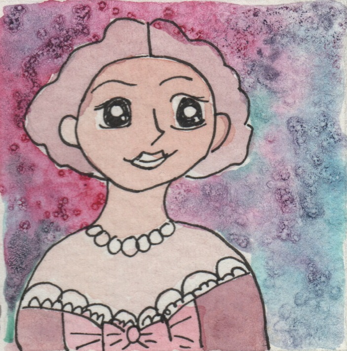
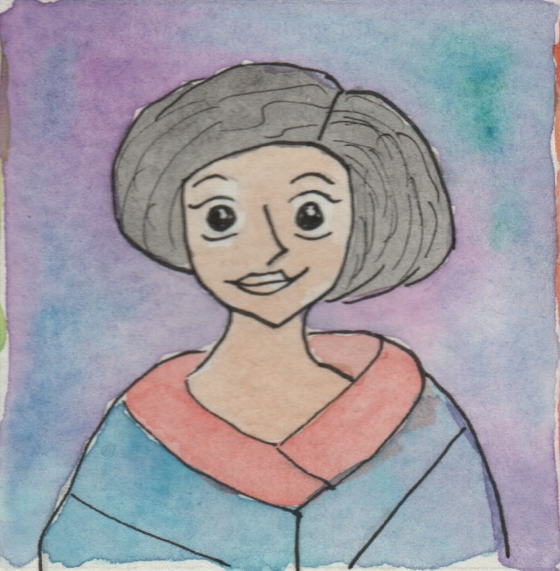

Mujeres haciendo historia
Inicio
Paginas recomendadas
Material recomendado
Contacto
Facebook
Instagram
A lo largo de la historia, las mujeres han hecho aportes increibles a la sociedad. Solo pocos son conocidos, pero todos fueron precursores. Conozca esta pequeña sección de increibles mujeres.

